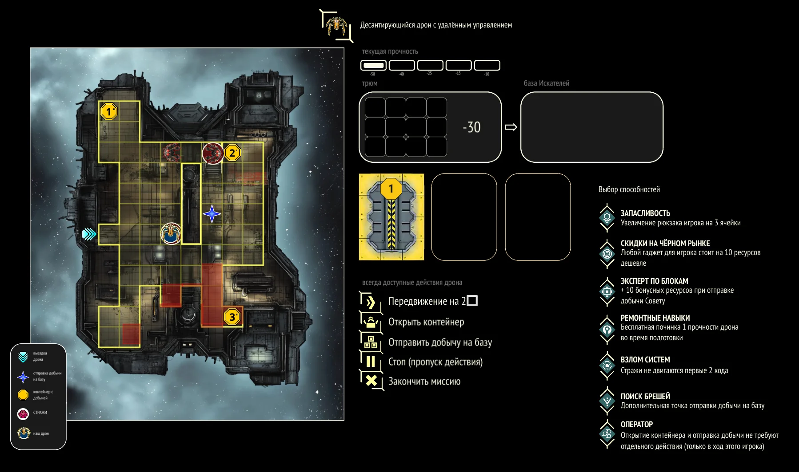
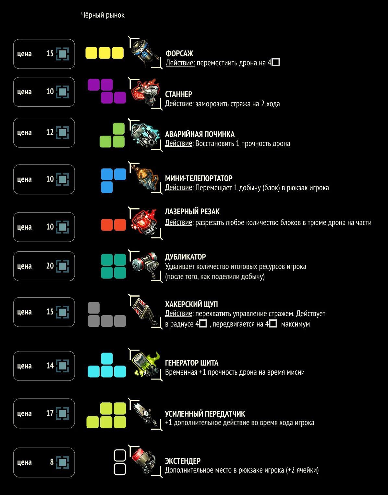

Искатели —
правила меняются каждый раунд
Seekers —
rules change every round
Короткая онлайн-игра про работу команды в условиях изменений. Клан Искателей управляет дроном в опасных отсеках космической станции и добывает ресурсы за ограниченное время. Каждый раунд правила меняются: новые действия и угрозы, меньше времени, триггер-зоны. Команда учится переадаптироваться. A short online game about team work under changing conditions. A clan of Seekers pilots a drone through dangerous compartments of a space station, collecting resources against the clock. Every round the rules change — new actions and threats, less time, trigger zones. The team learns to re-adapt.
Что этоWhat it is
Игра про команду в условиях изменений. Не в абстрактном «изменения сложные, давайте поговорим про эмоции», а буквально: правила переписываются на каждом раунде. Появляются новые действия и угрозы, сокращается время, добавляются триггер-зоны и риски, которых не было в предыдущем.
Тематически — клан Искателей, управляющий дроном в опасных отсеках космической станции. Команда передаёт ход по очереди, у каждого свой набор спецспособностей дрона. Между раундами можно перераспределить роли, ремонтировать дрон и закупать гаджеты — но решения принимаются под дефицит ресурсов и неопределённость следующего раунда.
A game about a team under changing conditions. Not in the abstract "change is hard, let's talk feelings" sense — literal: the rules of play get rewritten every round. New actions and threats appear, time shortens, trigger zones and risks emerge that weren't there before.
Thematically — a clan of Seekers piloting a drone through the dangerous compartments of a space station. Players take turns, each with their own set of drone abilities. Between rounds the team can reassign roles, repair the drone, and buy gadgets — but the choices are made under resource scarcity and uncertainty about the next round.
Что я сделалWhat I did
Геймдизайн короткой онлайн-игры на дроновой механике: трёхраундовая структура с меняющимися правилами, баланс действий и спецспособностей, инструменты межраундовой адаптации (ремонт, перераспределение ролей, гаджеты). Визуальный дизайн всех компонентов.
Прошла пилотное проведение.
Game design of a short online game on a drone-piloting mechanic: a three-round structure with shifting rules, balance of actions and abilities, between-round adaptation tools (repair, role reassignment, gadgets). Visual design of every component.
Pilot run completed.
Компоненты и скриншоты Components & screenshots




NDA · Корпоративные Легенды → NDA · Corporate Legends →
Бизнес-игра по методологии Stage Gate в офисном фэнтези. От настолки к Unity-приложению. A business game on the Stage Gate methodology in office fantasy. From board game to Unity app.